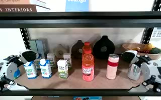
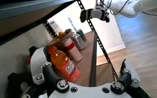
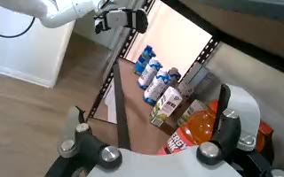
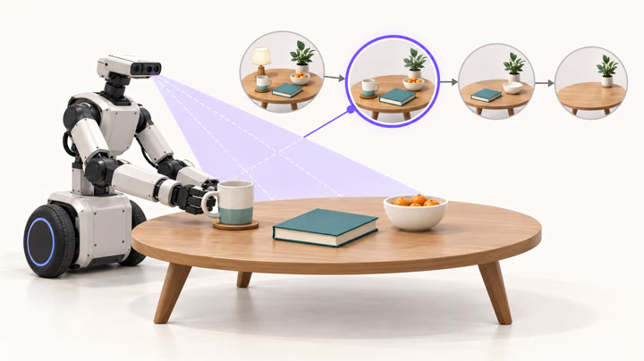
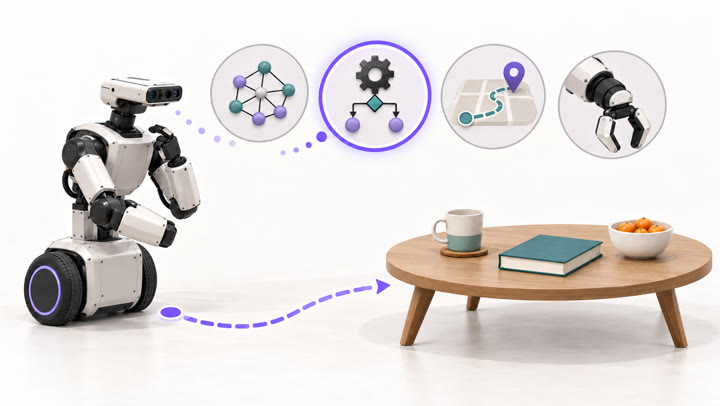
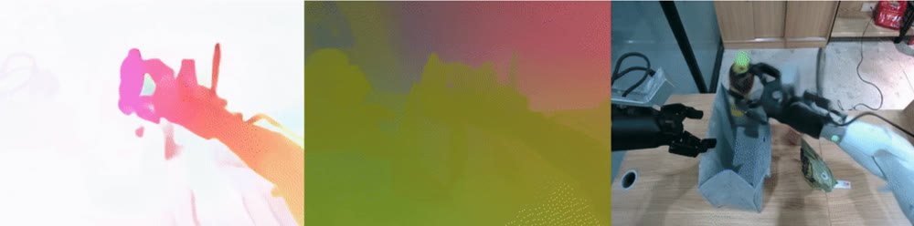
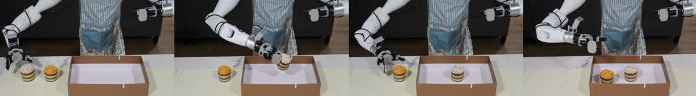
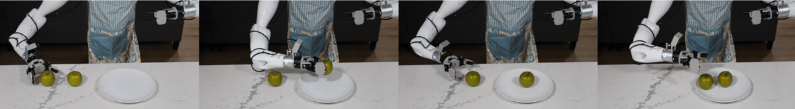

Robustness
Maintains reliable execution under various real-world disturbances, such as lighting changes, objects moved, and unexpected human intervention.
Aether AI · Research · 2026
Towards a fully autonomous Causal Robotic Intelligence System that understands human needs, acts over long horizons, and adapts as the world changes.
Maintains reliable execution under various real-world disturbances, such as lighting changes, objects moved, and unexpected human intervention.
Sustains autonomous execution across extended, multi-step tasks, continually tracking task state to retry failed actions and revise plans as needed.
Delivers personalized assistance, inferring preferences and implicit constraints from user memory and interaction history.
01 Overview
“CRIS-0 is a causality-driven robotic intelligence system that integrates a Causal Agent with a Causal World Model to construct structured causal representations of the physical world, enabling robots to actively explore, intervene in, reason about, and adapt to their environments.”
Deploying robots in the real world requires them to identify task-relevant causal variables and reason about how these variables influence one another over time. Whether a robotic system can handle complex, changing environments therefore depends largely on how well it models and understands the causal structure underlying task progress and physical interaction.
We introduce CRIS-0, a Causal Robotic Intelligence System that represents task progress through an explicit causal state and adapts its behavior as that state evolves. CRIS-0 contains two key components: a Causality-guided Robot Agent, which organizes task execution around causal state transitions, and a Causal World Model, which models and predicts the physical consequences of actions. Given a new task, CRIS-0 analyzes a small set of demonstrations to identify task-relevant variables, decompose the task into stages, define verification criteria, and construct the tools or policies needed for execution. During interaction, the agent continuously updates its state from observations, verifies intermediate outcomes, and selectively invokes rule-based tools, learned policies, navigation modules, or the world model to complete and refine the task.
This design enables three key capabilities. Robustness: CRIS-0 can detect task-relevant disturbances, distinguish them from irrelevant variations, and recover by returning to the affected stage. Autonomy: its explicit state representation enables CRIS-0 to track task progress, verify intermediate outcomes, and autonomously decide when to continue, retry, or replan during execution. Personalization: because task structure, verification rules, and execution tools can be constructed and refined from demonstrations and feedback, CRIS-0 can adapt its behavior to different users, preferences, and task-specific requirements.
02 Causality-guided Robot Agent
CRIS-0 unifies all control and verification strategies as callable tools that the planner can select and invoke, including policy models, agent-generated rule-based functions, SLAM-based navigation, world models, and verifiers. From a small set of demonstrations, CRIS-0 acquires these reusable tools and skills, then coordinates them based on the current task state throughout execution. When a tool fails during execution, CRIS-0 automatically revises the tool and retries the corresponding stage.

Head
Left
Rightverify(grasp) → falseIKError: joint limit hitTask state
Updated continuously from observations and tool feedback







The agent represents each task stage through a set of key causal variables, organizing inputs and outputs around these variables in a unified format. For example, when aligning a tablecloth corner, these variables include whether the cloth is grasped, the corner’s offset from its target position, and whether slippage has occurred. The agent updates this representation using observations and tool feedback to determine whether to adjust the motion, re-grasp the cloth, or proceed to the next stage.
cloth_graspedIs the cloth actually held? Decides whether the pull can begin at all, or whether the task state falls back to the grasping stage.
corner_offset_cmHow far the corner still sits from its target. Decides the direction and the distance of the pull, and when the stage is complete.
slippage_detectedDid the cloth slip out of the gripper mid-pull? Decides whether to continue or to re-grasp before trying again.
{
"stage": "align_tablecloth_corner",
"state": {
"cloth_grasped": true,
"corner_offset_cm": [12, -4],
"slippage_detected": false
},
"target": {
"corner_offset_cm": [0, 0]
}
}The unified tool interface provides a consistent calling format for different robotic capabilities, allowing the agent to select and invoke tools based on the current task state. For example, when a user asks for a drink suitable for their fitness goals, the planner selects an appropriate drink, invokes rule.position_gripper(target="coke") to position the gripper near it, and then calls policy.skill(label="grasp") for the final contact-rich grasp. The rule-based motion-planning function handles approaching the selected target among multiple drinks, providing the policy with a suitable starting pose. The policy therefore only needs to execute the local manipulation skill, without having to interpret the overall task or infer user intent.
CRIS-0 operates in a continuous loop of state assessment, tool execution, and outcome verification, progressively building and refining a task graph. Task decomposition initializes this graph, with nodes representing verifiable stages and edges representing transitions between them. During execution, the agent uses feedback from both successful and failed attempts to update the graph and determine the next step, whether to advance, retry, or revisit an earlier stage. This evolving graph guides subsequent execution as the agent accumulates experience.
A small set of teleoperated demonstrations lets CRIS-0 automatically discover reusable execution patterns.
The planner turns each task into atomic, verifiable stages, separating free-space motion from contact-rich interaction.
Each stage defines an observable success condition, checked by an executable verification script at runtime.
Each stage receives a reference strategy, such as a generated function or learned policy, exposed to the planner as a callable tool.
CRIS-0 implements a reference execution strategy for each stage and exposes it as a callable tool for the planner. For free-space motions, it extracts the gripper and arm poses relative to the target object at the end of the demonstrated stage to derive a suitable pre-manipulation configuration. The agent then encodes this spatial relationship in a reusable function.
For example, when grasping a pot, CRIS-0 identifies from the demonstrations that the gripper should first approach the handle. At runtime, the generated function uses SAM3 and RGB-D observations to localize the handle and applies the demonstrated relative pose to compute a target end-effector pose. Inverse kinematics then determines the corresponding joint configuration, allowing the arm to move into position before grasping.
In contrast, contact-rich stages often require finer control, such as continuously adjusting the gripper pose to achieve a stable grasp on a pot handle. Rule-based functions are often limited in their ability to handle these interactions, so CRIS-0 uses our policy model as the reference execution strategy for such stages. For some stages, such as pressing a button, both rule-based functions and policy models are viable, with neither clearly preferable in advance. CRIS-0 exposes both as tools, allowing the planner to select between them dynamically during execution.
After decomposition, CRIS-0 connects the stages into a task graph based on their dependencies and state transition conditions. Each node is associated with execution tools and verification criteria, while edges define how changes in key causal variables lead to transitions between stages. This structure supports both forward progress and recovery through retries or a return to an earlier stage.
Push cloth over edge
Rule-based functionCloth extends ≈5 cm past the table edge
Position gripper
Rule-based functionGripper near the target pre-grasp pose
Grasp & fine-adjust
Skill policyCloth securely held in the closed gripper
Fold
Skill policyCloth folded along the intended crease
Place into basket
Rule-based functionCloth released inside the storage basket
During task execution, CRIS-0 maintains an evolving task state based on observations and tool feedback. The planner uses this state to identify the current stage and select an appropriate tool, guided by the predefined stage definitions and reference execution strategies. When verification fails or an unexpected stage transition occurs, the planner reassesses the task state and determines whether to retry the action or revise the plan. If the failure stems from the tool itself, such as an IK solution that violates joint limits, CRIS-0 automatically revises the tool using the error feedback and retains the updated implementation after successful execution.
If an object is moved during grasping, the planner sees the task has regressed to approach and re-invokes the positioning function.
Each stage's outcome is checked before proceeding, so local failures are corrected before they propagate.
Each stage is assigned the execution tool best suited to it, enabling operations that a single policy struggles to handle end to end.
When verification fails, the agent uses the current task state and execution feedback to identify the cause and select a recovery path through the task graph. It may retry the stage with adjusted tool parameters, revisit an earlier stage to restore a required condition, or revise the tool implementation when the feedback reveals an error. Each recovery attempt is verified before execution continues. Successful recovery paths are incorporated into the task graph, while corrected tool implementations are retained for reuse, allowing the agent to build on its experience across successive attempts.
03 Causal World Model
CRIS-0 models future evolution through task-relevant causal variables rather than relying only on direct pixel prediction. These variables capture the state changes that matter for interaction, allowing the system to reason about how robot actions affect task progress and to use this structure for both future prediction and policy learning.
Our Causal World Model predicts future physical evolution through task-relevant causal variables. Given the current observation and a candidate action, the model first estimates how key intermediate states may change, and then uses these predicted changes to characterize the resulting future world. This creates a structured prediction process of current state → causal variable transition → future pixel observation.
Such a representation makes future prediction more useful for robotic decision making. The agent can ask not only what will happen visually, but also whether the action is likely to produce the intended state transition.
Generated futures
Six model-generated video samples across human interaction and everyday manipulation.
Human–robot interaction
The robot offers a cup, and the person reaches out to take it.
Deformable objects
A gripper lifts the hem and folds the shirt onto itself.
Object placement
The gripper picks up a blue bottle and places it in an open drawer.
Tabletop manipulation
A plate moves from a serving tray onto the placemat.
Spatial manipulation
The right hand lifts a red ball from the top shelf and places it on the bottom shelf.
Bimanual coordination
The left hand passes a pink object to the right hand, which places it in a blue container.
Model-generated videos · Each clip plays at its original speed. Use the player controls to pause or replay.
We extend the Causal World Model with an additional action module, turning it from a pure future predictor into a policy model that can directly generate robot actions. The world model backbone continues to model how the physical world is expected to evolve, while the action module maps the shared representation to executable robot controls. This design allows the policy to inherit the structured future understanding learned by the world model, rather than predicting actions solely from the current observation. In this way, the model can reason over both the expected future causal state and the action-side variables before producing the final control output, allowing world modeling signals to inform robot policy learning.
04 Experiments
We evaluate CRIS-0 on real robots under disturbances, over long horizons, with underspecified user requests, on complex manipulation, and on new objects. Across these settings, CRIS-0 completes tasks reliably by selecting and coordinating the capabilities each situation requires.